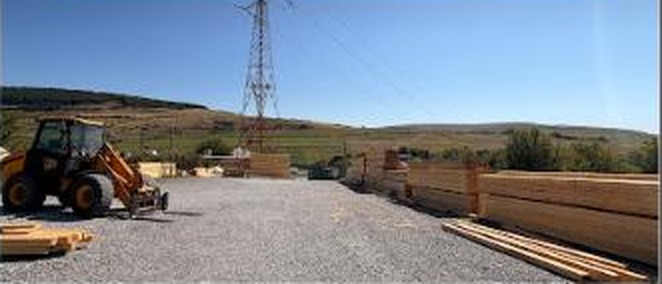

407274 Vâlcele · comuna Mociu · Cluj
Cherestea
în Vâlcele
Pentru informații despre cherestea, luați legătura direct cu depozitul pe WhatsApp.
Scrie pe WhatsApp407274 Vâlcele · comuna Mociu · Cluj
Pentru informații despre cherestea, luați legătura direct cu depozitul pe WhatsApp.
Scrie pe WhatsAppFotografie reală din curtea depozitului
Din comunicarea depozitului
Pentru întrebări despre cherestea, puteți trimite un mesaj direct către Depozit Cherestea Vâlcele.
Scrie pe WhatsAppDepozit local
Depozit Cherestea Vâlcele se află în 407274 Vâlcele, comuna Mociu, județul Cluj. Program: Luni–Vineri 08:00–17:00; Sâmbătă–Duminică închis.
5,0 din 5 · din 5 recenzii Google

Recenzii Google
5,0 din 5, din 5 recenzii Google
„Am fost foarte mulțumit de experiența avută. Produsele sunt de foarte bună calitate, iar cheresteaua este bine pregătită și la prețuri corecte. Personalul este amabil, profesionist și te ajută cu răbdare să alegi exact ceea ce ai nevoie.”
— Andrei C.P., Google
„Servicii de calitate și seriozitate maximă. Recomand cu încredere! 🌳”
— Nicu C.
„Prețuri bune, cherestea dimensionată de calitate. Livrare rapidă ☎️”
— Rareș L.
Recenzii reale, preluate din profilul Google al depozitului.
Contact & program